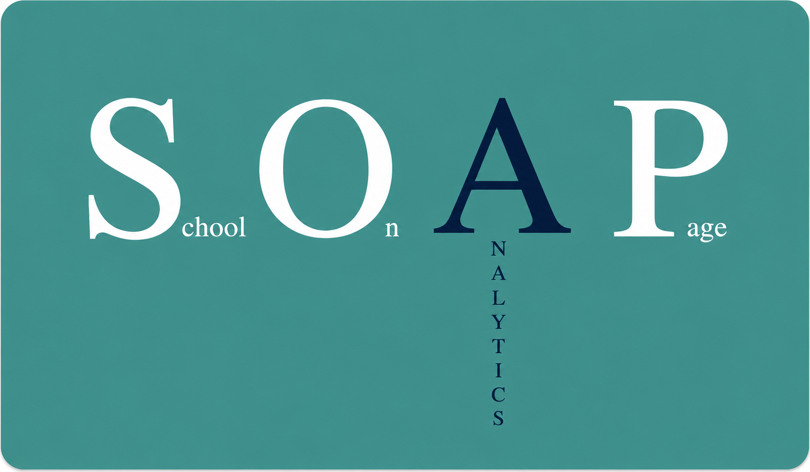
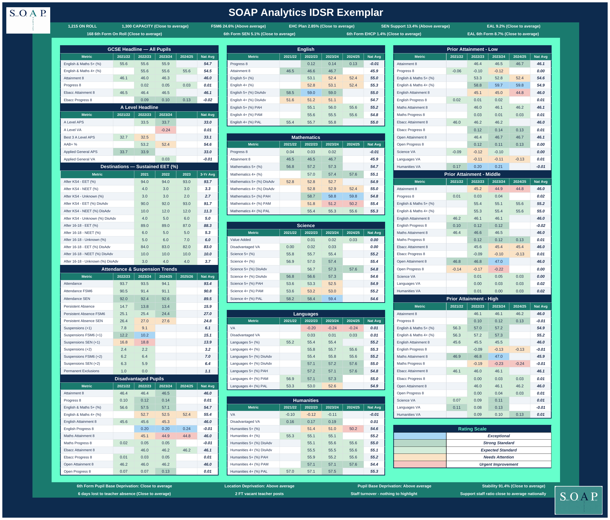

Strategic Intelligence for School Leaders
Clarity. Insight. Impact.
SOAP brings together your school's attendance, behaviour, safeguarding, achievement, finance and self-evaluation data in one clear strategic performance view.


I'm Robin Dann. I've spent 22 years in teaching, the last 10 of them in senior leadership — most recently as Deputy Headteacher and Strategic Data Lead across a Trust of 18 schools, four secondaries and fourteen primaries.
Working alongside headteachers, I saw how hard it is to see every aspect of a school clearly when you're reliant on so much data, spread across so many different staff, just to pull it together. That's why I built SOAP Analytics — so that picture is ready quickly, and easy to review, whenever a leader needs it.
It brings every facet of a school into one objective view — Context, Safeguarding, Inclusion, Curriculum & Teaching, Achievement, Attendance & Behaviour, Personal Development & Wellbeing, Leadership & Governance — so leaders can stop hunting for information and get straight on with acting on whatever it shows them.
This isn't a dashboard bolted onto someone else's system by people who've never sat in a headteacher's chair. Every section, every rating, every report is shaped by someone who has sat across the table from an inspector, presented to a board of governors, and knows exactly what a leader needs to see — and how fast they need to see it.
Headteachers. Trust leaders. Governors. Data leads who are tired of rebuilding the same report from scratch every cycle. If you need a clear, defensible view of school effectiveness — not just data, but the evaluation and interpretation behind it — this is built for you.
I'd genuinely like to hear what your school or trust is grappling with.
Get in touch →What School Leaders Say
Rob has worked closely with us in the development of his SOAP Analytics tools, including the creation of a ‘School on a Page’ approach that enables leaders to understand complex information quickly and make better-informed decisions. What sets Rob’s work apart is his understanding that effective data analysis is not simply about presenting more information, but about identifying what really matters. He has worked alongside our leaders to help them understand the right questions to ask, the data that will provide meaningful insight, and how best to present it. The ability to bring together performance data, survey information and reference data in a clear and accessible way has been particularly powerful. Rob’s expertise in data analysis, his development of SOAP Analytics and his skill in using Power BI have enormous potential to save leaders time while significantly improving the quality of analysis and decision-making. Just as importantly, Rob is someone you can trust and depend upon.
SOAP Analytics has been an invaluable tool for my leadership team this year. It has provided the foundations for strategic conversations, helping us to question why certain trends are emerging and allowing us to review the impact of our actions once they have been taken. As the academic year progresses and trends begin to emerge, these conversations become more in-depth, and the data provides even greater insight. I would strongly recommend SOAP Analytics to any school.